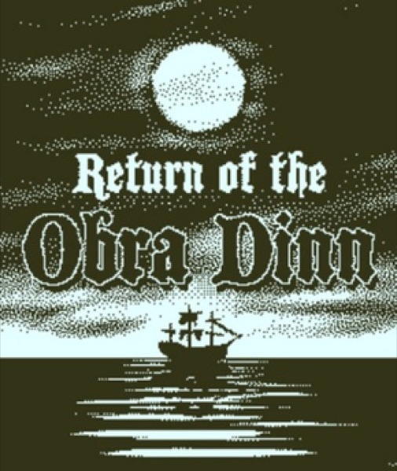

Puzzle · 2018
Return of the Obra Dinn
Deduce sixty deaths from frozen moments; dithered black and white.

Cover: Wikipedia: Return of the Obra Dinn
Facts
- Released
- 2018-10-18
- Genre
- Puzzle
- Category
- Puzzle
- Platforms
- Nintendo, PC, PlayStation, Xbox
- Developers
- Lucas Pope
- Publishers
- 3909, Lucas Pope
PC requirements
- Minimum
- [object Object]